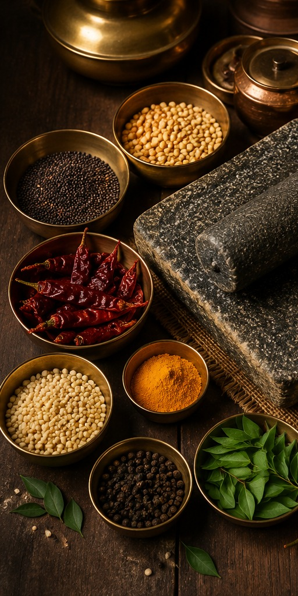
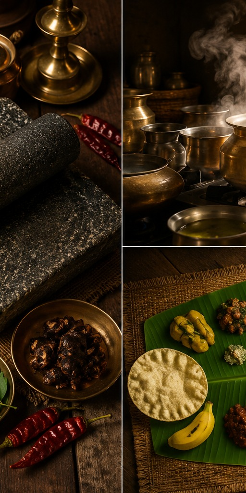
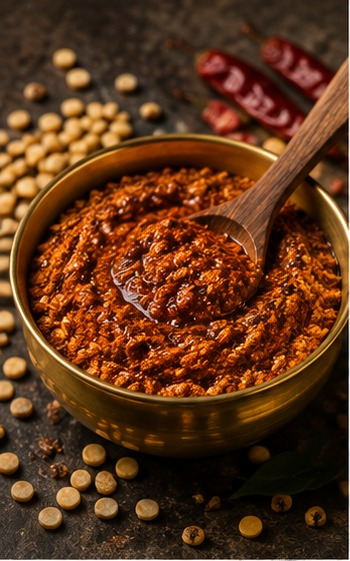
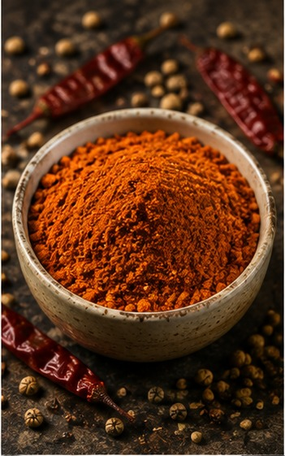
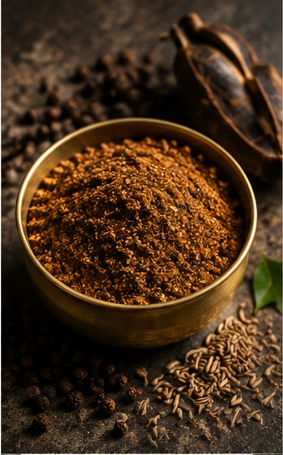
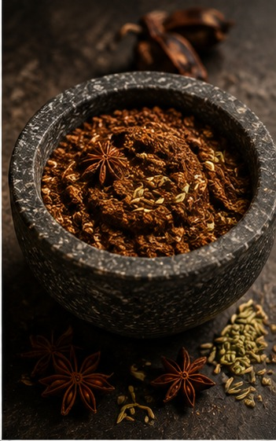
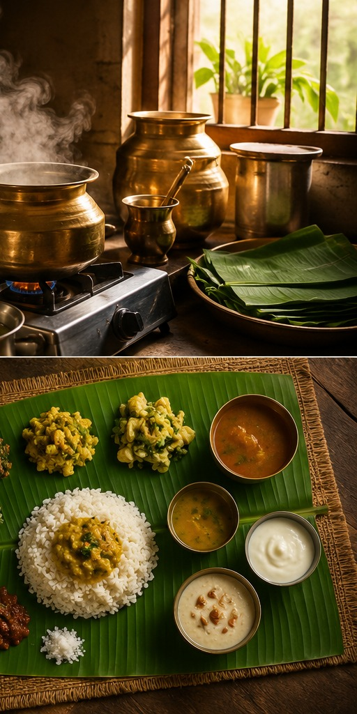

"The suffix 'Amudu' is attached to the name of every food item — Saathamudu, Kariamudu, Thirukkannamudu — because in an Iyengar kitchen, food is never just food."From Kitchen to Diaspora — the Mathru Baho story
From temple towns in Tamil Nadu to kitchens on every continent — Mathru Baho brings the spices, the stories, and the soul of Iyengar life to anyone curious enough to pull up a chair. No lineage required. Just an appetite.

The Iyengar community has carried its cuisine and customs from Tamil Nadu's temple towns to Edison, New Jersey, to Michelin-starred tables in New York — adapting to every new home, without ever losing what makes it unmistakably itself. Mathru Baho exists to carry that a little further: to your table, wherever that is.

Tracing back nearly three millennia to the Sri Vaishnava tradition of Ramanujacharya — a cuisine built on devotion as much as flavor.
From family-run kitchens to celebrated restaurants abroad, Iyengar families have kept their food traditions alive on every continent.
You don't need to be born into this tradition to belong at this table. Mathru Baho is an open door, not a gate.
Eight traditional blends, ground the way your paati would insist on. Add what your kitchen is missing — one tin, one recipe, one memory at a time.

Roasted lentil & chili powder for idli, dosa, and a spoon of ghee over rice.

Roasted lentil and spice blend built for the everyday lentil-vegetable stew.

Peppery, tangy saaru podi — the backbone of the daily rasam bowl.

Aromatic, fiery blend with star anise and fennel for bold curries.

Iyengar life is carried in more than its food — in the veena's tuning, the ankle bells of Bharatanatyam, the jasmine strung for a wedding mandapam. This is the world the spice shelf comes from.
"The suffix 'Amudu' is attached to the name of every food item — Saathamudu, Kariamudu, Thirukkannamudu — because in an Iyengar kitchen, food is never just food."From Kitchen to Diaspora — the Mathru Baho story